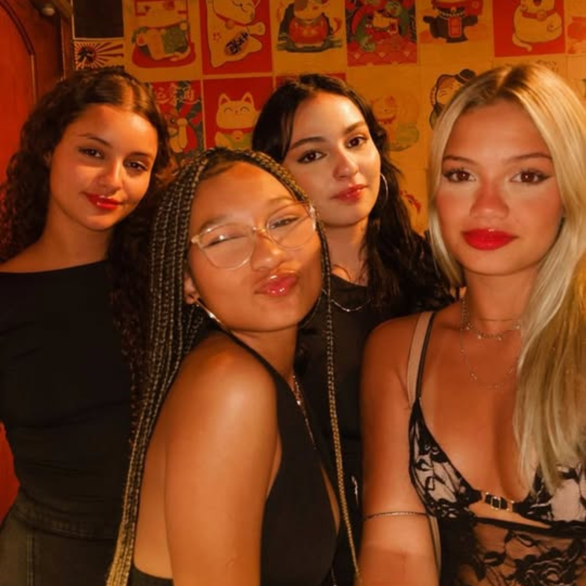
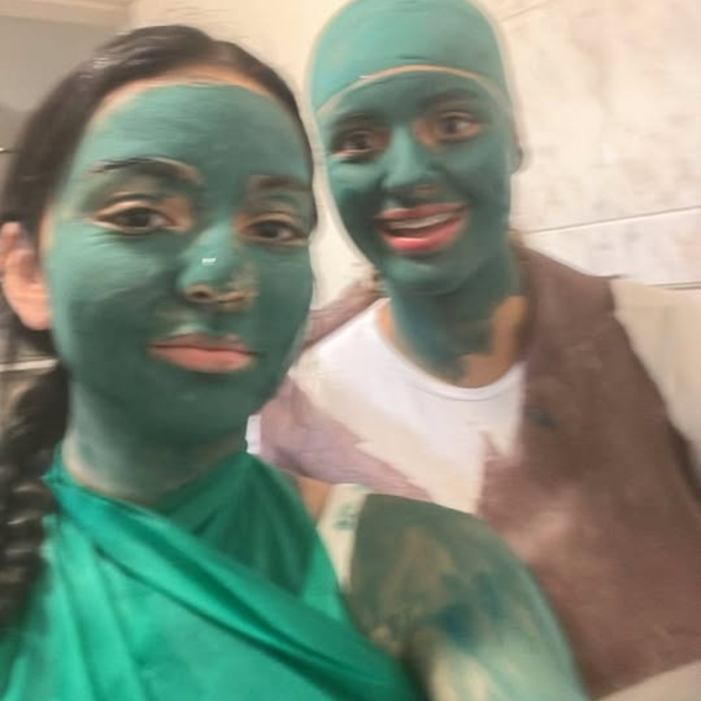
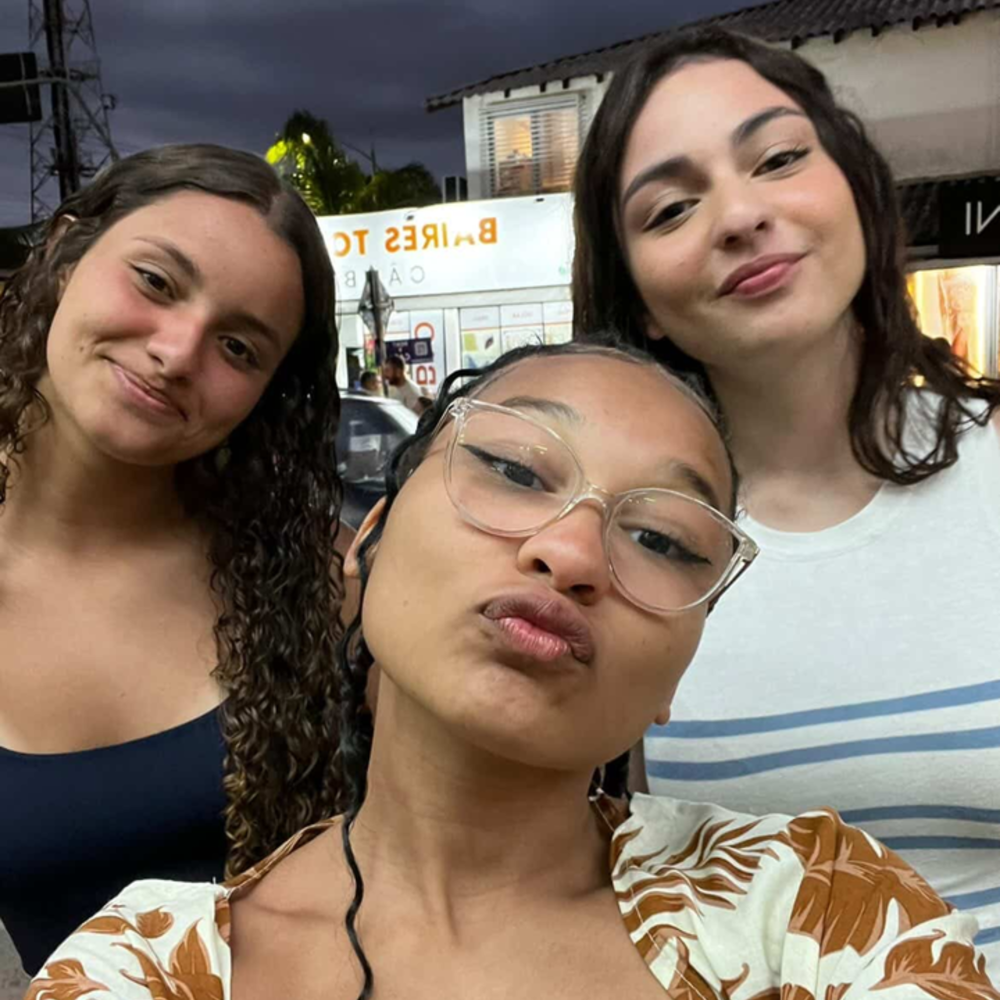
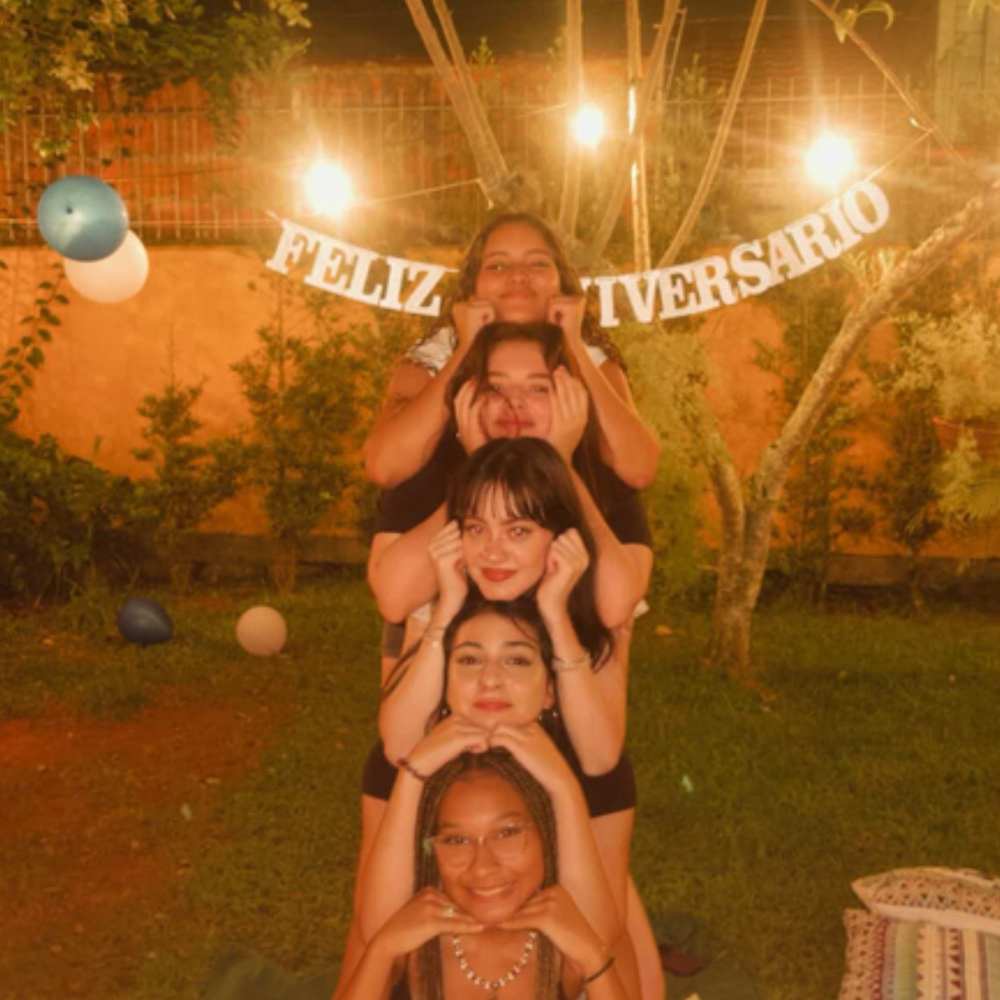
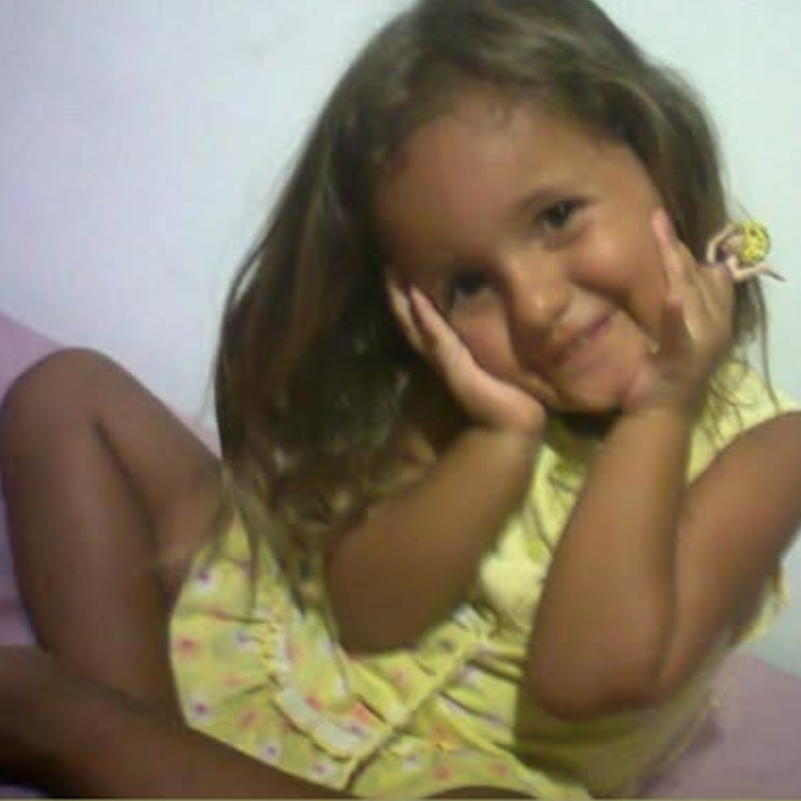
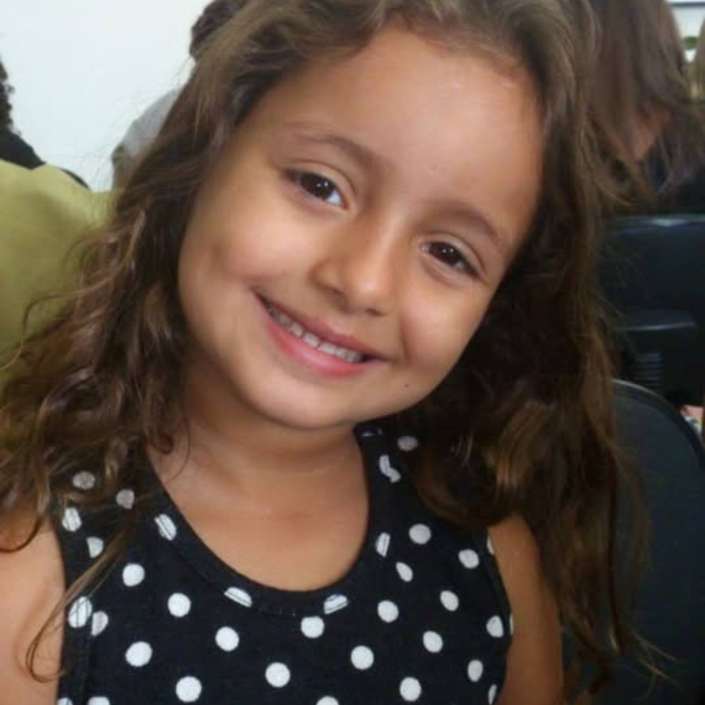
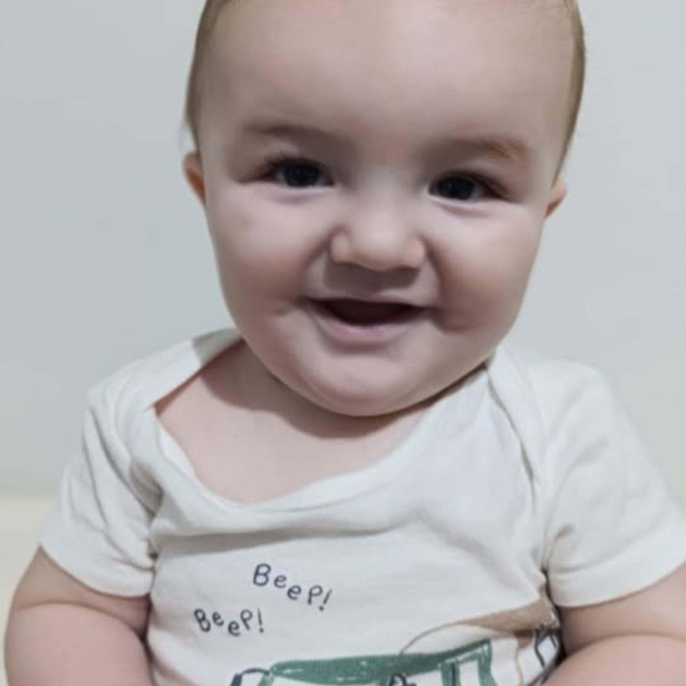

Sobre Mim
Me chamo Ana Clara, nasci no dia 26/03/2009. Sou natural de Vitória, Espírito Santo, mas vim para Florianópolis com um ano e seis meses, e desde então moro aqui.
Estou no meu segundo ano do ensino médio na escola SESI SENAI. Pretendo me formar e seguir na carreira de técnico de TI.
Este portfólio documenta meu desenvolvimento e minhas atividades durante esses três anos de ensino.















Minhas Matérias
Atividade - Quebrando a banca
A atividade propõe analisar o filme relacionando-o com conceitos matemáticos, como probabilidade e estatística. Os alunos devem interpretar a história, identificar aplicações da matemática e refletir sobre decisões e consequências. Também estimula a criatividade ao propor a criação de uma ideia de roteiro envolvendo matemática.
Habilidades - H31- Reconhecer fenômenos e eventos (naturais, científicos, tecnológicos e/ou sociais) de caráter aleatório, compreendendo o significado e a importância da probabilidade como meio de prever resultados.
H32- Identificar em diferentes áreas científicas e outras atividades práticas modelos e problemas que fazem uso de estatísticas e probabilidades.
C5: Aplicar o pensamento probabilístico para quantificar e fazer previsões em situações aplicadas a diferentes áreas do conhecimento e da vida cotidiana.
Ver Atividade Completa →
Atividade - Criando a banca da matemática AV1
A atividade consiste em criar um jogo baseado no filme, utilizando análise combinatória e probabilidade. Os alunos devem elaborar regras claras, incluir estratégias matemáticas e testar o jogo. Ao final, os grupos apresentam e participam de uma competição entre si.
Habilidades - H30: Identificar dados, regularidades e relações numa situação que envolva o raciocínio combinatório, utilizando os processos de contagem.
H31: Reconhecer fenômenos e eventos (naturais, científicos, tecnológicos e/ou sociais) de caráter aleatório, compreendendo o significado e a importância da probabilidade como meio de prever resultados.
C5: Aplicar o pensamento probabilístico para quantificar e fazer previsões em situações aplicadas a diferentes áreas do conhecimento e da vida cotidiana.
Ver Atividade Completa →
Atividade - Avaliação paixão segundo G.H.
A atividade propõe a leitura da obra A Paixão Segundo G.H. e a análise, em grupo, do comportamento da protagonista a partir de uma perspectiva social. Os alunos devem relacionar o tema com conceitos como classe social, invisibilidade, normas culturais e a construção do “nojo”, discutindo se suas atitudes rompem regras sociais.
Habilidades - H4 e H22
Ver Atividade Completa →
Atividade - Game literário
A atividade consiste na criação de jogos digitais, em grupo, na plataforma Wordwall, com o objetivo de revisar as escolas literárias brasileiras do Quinhentismo ao Simbolismo. Cada grupo será responsável por uma escola literária e deverá elaborar perguntas, desafios e explicações que demonstrem compreensão do conteúdo.
Habilidades - Habilidades: H4 / H14
Ver Atividade Completa →
Atividade - Imperialismo no séc. XIX (Neocolonialismo)
A atividade propõe analisar o impacto do imperialismo no século XIX a partir do estudo de um país colonizado. Por meio de imagens, mapas e representações, o aluno deve apresentar a trajetória do país antes, durante e após a colonização, destacando transformações sociais, econômicas e políticas até os dias atuais.
Habilidades - C2, H8, H10, H12
H8 - Analisar as relações entre os agentes envolvidos no mundo do trabalho.
H10 - Compreender as transformações no mundo do trabalho, geradas por mudanças na ordem econômica.
H12 - Propor ações sustentáveis e eficientes visando a melhoria dos processos produtivos.
Ver Atividade Completa →
Atividade - A Grande Guerra
A atividade propõe a criação da capa de um jornal inspirado no início do século XX, com base em pesquisas sobre a Primeira Guerra Mundial e a Revolução Russa. Os alunos devem assumir o papel de jornalistas e produzir uma matéria principal e duas secundárias, considerando o contexto histórico, político, econômico e cultural da época, além do ponto de vista definido pela nacionalidade escolhida.
Habilidades - C3 - H15, H16, H20
H15 - Reconhecer os movimentos sociais e sua representação da coletividade como elemento de transformação da realidade social, política, econômica e cultural.
H16 - Compreender a relação entre ciência, tecnologia e sociedade e os efeitos dessa relação no contexto social, político e econômico.
H20 - Implementar ações de proteção ou recuperação ambiental com base em princípios, leis e iniciativas de desenvolvimento sustentável.
H39 - Relacionar o papel das instituições sociais às soluções para problemas políticos, econômicos, sociais e ambientais no contexto da sociedade brasileira.
Ver Atividade Completa →
Atividade - Geopolítica
A elaboração desta apresentação possibilitou uma análise aprofundada de uma nação, com base em dados confiáveis para compreender sua formação e realidade atual. O trabalho em grupo contribuiu para comparar diferentes contextos e ampliar a visão sobre a dinâmica geopolítica global, desenvolvendo habilidades de pesquisa e pensamento crítico sobre a influência de fatores históricos e geográficos nas sociedades.
Habilidades - C1 - Compreender processos históricos, sociais e geográficos nos diversos aspectos da vida em sociedade.
H1 - Reconhecer o processo de formação do indivíduo nos aspectos históricos, geográficos, sociais e filosóficos.
H2 - Compreender o processo de socialização do indivíduo, considerando os princípios do pensamento e da lógica.
H3 - Compreender as relações de poder entre os diversos grupos sociais.
H4 - Compreender mudanças e permanências ao longo do tempo na constituição da sociedade.
H5 - Analisar criticamente os aspectos políticos, econômicos e sociais relacionados à formação da sociedade no Brasil e no mundo.
Ver Atividade Completa →
Atividade - EVOLUCIONISMO EVOLUCIONISMO
A atividade propõe o estudo das ideias evolucionistas, seus principais cientistas e evidências da evolução, iniciando com a criação de um meme sobre o tema.
O meme utiliza a ideia de evolução de forma irônica, comparando a evolução humana com o mundo dos investimentos, mostrando que nem toda “evolução” resulta em algo positivo, ao destacar riscos e crises financeiras.
Habilidades - C3 - Determinar os impactos das ações humanas nos ambientes, identificando suas causas e propondo soluções para a sua redução.
H15 - Comparar propostas de intervenção ambiental aplicando conhecimentos científicos e tecnológicos, observando os riscos e benefícios de sua implementação.
H18 - Identificar situações de risco ambiental na cidade onde reside.
Ver Atividade Completa →
Atividade - Dependência global de energia
A atividade propõe a análise crítica do uso contínuo de combustíveis fósseis, mesmo diante de seus impactos ambientais. O grupo deve investigar a dependência global de energia, utilizando conceitos científicos, dados reais e argumentação para explicar causas, consequências e possíveis soluções, além de apresentar um posicionamento sobre o tema.
Habilidades - C1: Entender a ciência e a tecnologia como construções humanas
C2: Aplicar conceitos científicos para explicar fenômenos do cotidiano
H9: Compreender energia e suas transformações
H11: Investigar, levantar hipóteses e tirar conclusões
H1: Interpretar diferentes formas de informação (textos, gráficos, dados)
Ver Atividade Completa →
Atividade - Carga elétrica e eletrostática
Este experimento teve como objetivo observar a eletrização por atrito e seus efeitos em materiais condutores. Utilizou-se uma bola metálica leve (papel alumínio) e um cano eletrizado por atrito. Conclui-se que a eletrização por atrito, a indução e a natureza dos materiais são fatores essenciais para explicar a interação entre os corpos no experimento.
Habilidades - C1 - Compreender as ciências naturais e as tecnologias como construções humanas associadas à cultura dos povos e suas visões de mundo.
H1 - Interpretar informações apresentadas em diferentes linguagens usadas nas Ciências, como texto discursivo, gráficos, tabelas, relações matemáticas, diagramas ou representação simbólica.
C2 - Aplicar os conceitos fundamentais e estruturas procedimentais das Ciências da Natureza na explicação de fenômenos cotidianos, bem como dominar processos e práticas da investigação científica.
H7 - Compreender os conceitos relacionados à Química nos seus diferentes ramos: Fisico-química, Química orgânica e Química Geral.
H9 - Explicar os conceitos de energia, matéria, vida e transformação para explicar fenômenos naturais e procedimentos tecnológicos.
H11 - Empregar procedimentos e práticas de observação, levantamento de hipótese, experimentação, coleta de dados e conclusões para resolução de problemas relacionados às Ciências da Natureza.
H12 - Relacionar informações para construir modelos em ciência e tecnologia.
Ver Atividade Completa →
Atividade - Grand Prix
Participei do Grand Prix SENAI 2026, uma competição de inovação em que desenvolvemos o projeto Gammy para um desafio de eficiência energética, com foco no reaproveitamento do calor de sistemas de ar-condicionado. Estruturamos um Lean Canvas para validar a solução e, durante o processo, desenvolvi habilidades como trabalho em equipe, organização de ideias e tomada de decisão sob pressão.
Ver Atividade Completa →
Em andamento...
Ver Atividade Completa →Contato
Gostou do meu trabalho? Vamos conversar sobre tecnologia!
Enviar E-mail